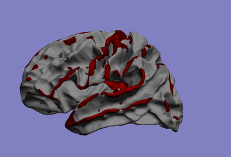
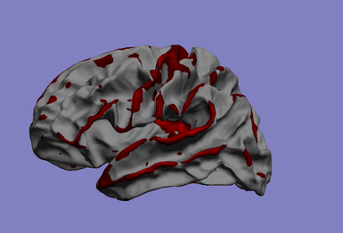

I'm interested in the study of learning algorithms for modeling and predicting longitudinal changes in imaging, clinical and biological data. We can think of time series of patients' data as measurements from an underlying disease progression trajectory spanning several years (left figure, top). Yet, when we observe the patients during a clinical trial, the disease time information is unknown (left figure bottom). This fascinating research topic aims at reconstructing the natural history of a pathology from individual time series of clinical data.

Try the algorithm on our webservice!
GP Progression Model.inria.fr
One of my main research axis consists in studying the relationship between brain phenotypes quantified by neuroimaging (such as atrophy, or connectivity) and individual's genetic profile. This challenging research field requires the development of efficient and powerful statistical models for studying multivariate patterns of associations between imaging and genetics data. The circle plot on the left shows the genetic locations significantly associated to the brain cortical thinning shown on the right hand side.
 

My research activity focuses on the definition of learning algorithms for jointly modeling of heterogeneous biomedical information. Data complexity and heterogeneity represents a major computational and statistical challenge, ultimately affecting the interpretability and generalization.